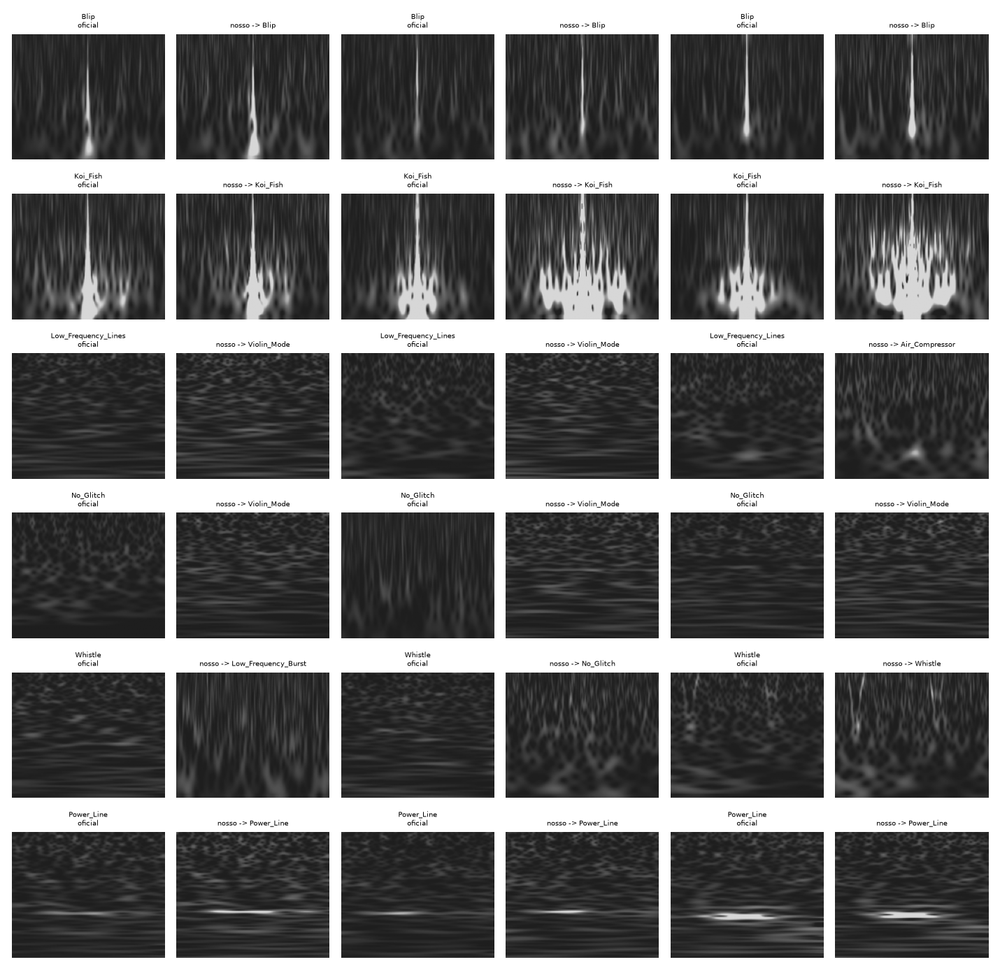

O Plano 1 não validou a nossa “câmera”. A melhor condição chegou a macro-F1 0,714 e 6% de rejeição OOD, contra limiares de 0,85 e 5%. Os glitches curtos (Blip, Koi_Fish, Tomte, Chirp) foram reconhecidos quase como no painel oficial. As falhas se concentraram em estruturas longas ou estacionárias — Low_Frequency_Lines, No_Glitch e Whistle —, quase sempre confundidas com Violin_Mode.
Uma investigação feita depois do veredito apontou a causa provável: o jeito de calcular o Q-transform. O Gravity Spy procura o fator Q em 10–2048 Hz, com frequência linear e resoluções fixas (tres = 0,002 s, fres = 0,5 Hz), sobre 64 s de dados a 16 kHz. A nossa cadeia calcula direto em 20–512 Hz com frequência logarítmica, sobre 32 s a 4 kHz. Esta versão escolhe, com um piloto que não toca nos glitches de avaliação, a variante mais fiel ao Gravity Spy e repete o teste de fechamento com ela, sem retreinar a rede.

| Hipótese | Teste | Resultado |
|---|---|---|
| Branqueamento com 32 s em vez de 64 s | leitura do código do gwpy | fraca: nos dois casos o ruído é a mediana de trechos de 2 s; muda só o número de trechos (~30 × ~60) |
| Q escolhido em faixa diferente (20–512 × 10–2048 Hz) | Q selecionado em 48 glitches, nas duas faixas | rejeitada: Q mediano igual em todas as classes |
Receita completa do Gravity Spy (linear, tres, fres, 10–2048 Hz) | correlação de pixels com o painel oficial em 70 glitches | apoiada: Low_Frequency_Lines 0,48 → 0,58; No_Glitch 0,50 → 0,60; Whistle 0,51 → 0,66; Blip e Koi_Fish ~iguais |
| Sobra diferença | mesma comparação | fundo ainda 4 tons mais claro e correlação longe de 1 no ruído; candidatos restantes: 16 kHz e 64 s, só testáveis com novo download |
Para 82 glitches de treino de 8 classes (as que falharam e as que funcionaram), em 12 arquivos de O1 escolhidos com dado público em janela de 64 s, cada variante gera a imagem de entrada da CNN. Ela é comparada com o painel oficial recortado do mesmo glitch.
| Variante | Taxa | Janela | Q-transform |
|---|---|---|---|
| v10_atual | 4 kHz | 32 s | receita da linha 2.0 (log, 20–512 Hz) |
| gs_4k_32s | 4 kHz | 32 s | receita Gravity Spy |
| gs_4k_64s | 4 kHz | 64 s | receita Gravity Spy |
| gs_16k_64s | 16 kHz | 64 s | receita Gravity Spy (a mais fiel) |
Regra de escolha (fixada antes): vence a maior média, entre as 8 classes, da correlação mediana de pixels. Se a diferença para uma variante mais barata for menor que 0,02, vence a mais barata (4 kHz antes de 16 kHz; 32 s antes de 64 s). A 4 kHz o gwpy limita a busca de Q a ~1.290 Hz, pela frequência de Nyquist; só a variante a 16 kHz cobre os 2.048 Hz do Gravity Spy.
O conjunto de fechamento é remontado com a variante escolhida: mesma seleção de arquivos da v1.0, ajustada para a janela nova. A rede avalia duas condições, com os modelos existentes:
| Condição | Modelos | Renderer | Papel |
|---|---|---|---|
| B1v11 | 20–512 Hz (v1.0, sem retreino) | escala Gravity Spy | decide |
| A2v11 | atuais (painel 10–2048 Hz) | escala Gravity Spy | comparação |
As condições com renderer por percentis não são repetidas: na v1.0 elas rejeitaram 100% dos glitches conhecidos.
| Critério | Limiar |
|---|---|
| C1 — macro-F1 (classes com ≥ 10 amostras) | ≥ 0,85 |
| C1 — acurácia | ≥ 0,85 |
C2 — fração reject_ood | ≤ 0,05 |
Intervalos de 95% por bootstrap de arquivos (2.000 réplicas, semente 20261027). Tudo está em configs/plano1_v1_1.toml.
| Resultado | Interpretação | Próximo passo |
|---|---|---|
| B1v11 passa | A câmera reproduz o Gravity Spy o bastante para glitches conhecidos. | Regerar os Q-grams dos eventos com a mesma receita (os recortes atuais têm 32 s a 4 kHz) e rodar o catálogo como exploratório; em seguida, o Plano 2. |
| Melhora, mas não passa | A receita explica parte da diferença; o resto pode vir da calibração (h(t) online × GWOSC), que não temos como reproduzir. | Discutir com o professor treinar com imagens geradas pela nossa própria câmera (os 966 glitches já reconstruídos são o embrião desse conjunto). |
| Não melhora | A receita não era a causa principal. | Registrar; seguir para a câmera própria no treino. |
| Lote | O que faz | Recursos | Tempo |
|---|---|---|---|
| A — piloto | 12 arquivos a 4 e a 16 kHz, 4 variantes, escolha da variante | internet, até ~7,8 GB | ~1 h |
| B — fechamento | 150 arquivos com a variante escolhida, 2 condições, veredito | internet + GPU; até ~19,5 GB a 4 kHz (até ~78 GB a 16 kHz) | 5–6 h |
powershell -ExecutionPolicy Bypass -File .\tools\plano1\v1_1\executar_v1_1.ps1
-Aceito16k), por causa do download quatro vezes maior.outputs/research/plano1_v1_1/ (piloto, fechamento, condições e logs).recipe="gravity_spy" de gwpy_qtransform_consistent não altera nada na linha 2.0: o padrão continua sendo a receita do catálogo, com os mesmos arquivos de saída.Arquivos: configs/plano1_v1_1.toml; src/gwproject/commands/closure_pilot.py (comando gwproject research closure-pilot); opção recipe em src/gwproject/gwosc_pipeline.py; opções --sample-rate, --window-seconds e --recipe em closure-set; tests/test_closure_pilot.py; tools/plano1/v1_1/. Parâmetros do Gravity Spy: gravityspy/utils/utils.py, função make_q_scans (github.com/Gravity-Spy/GravitySpy).